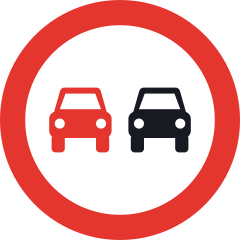
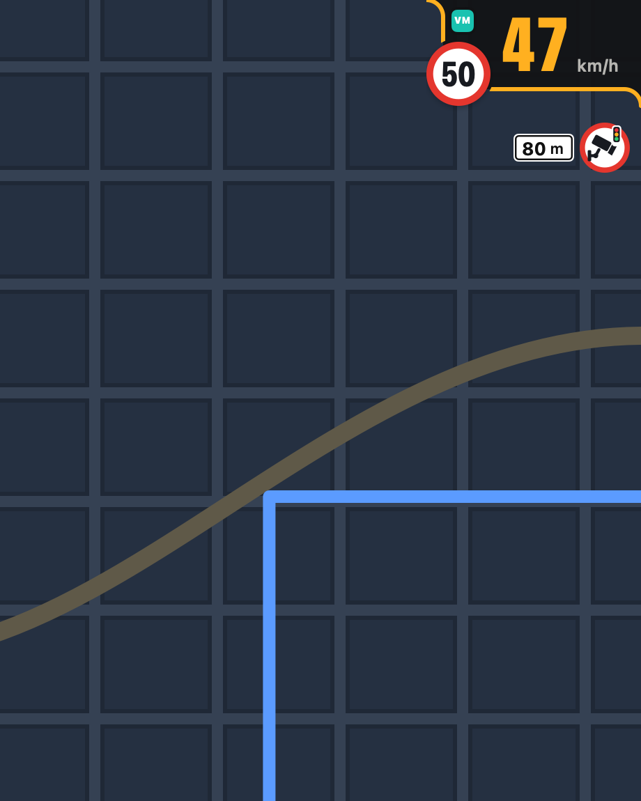
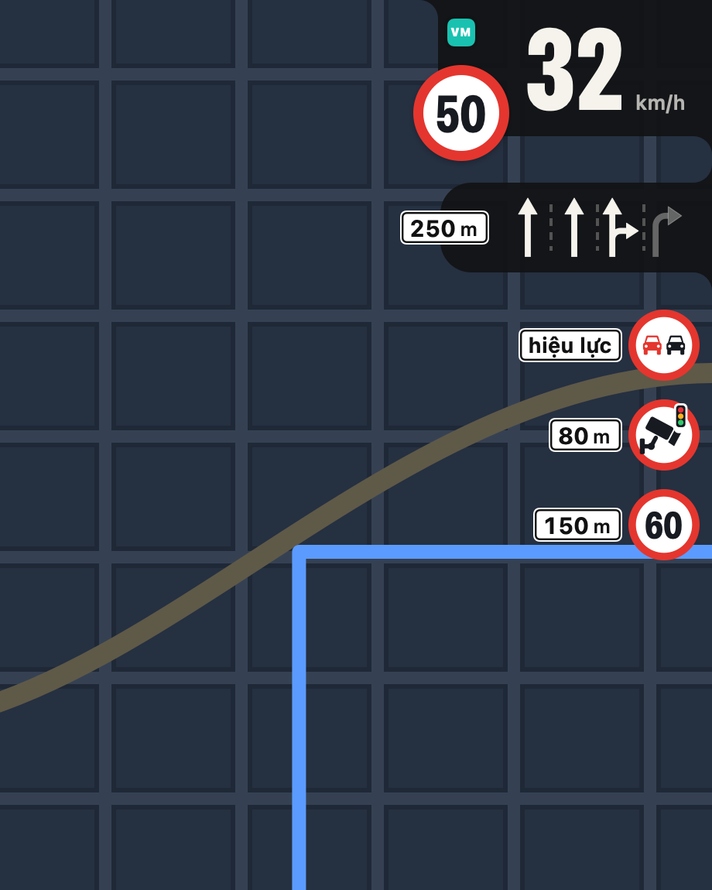
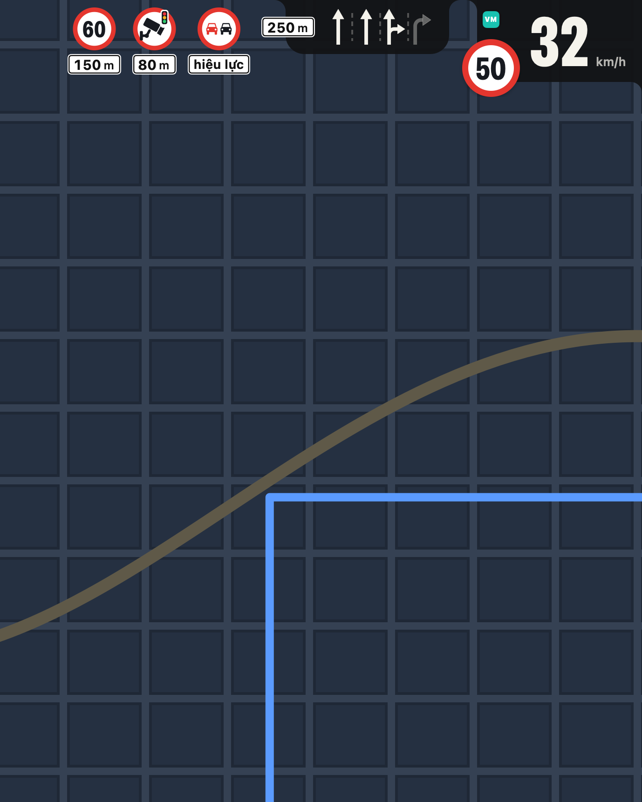
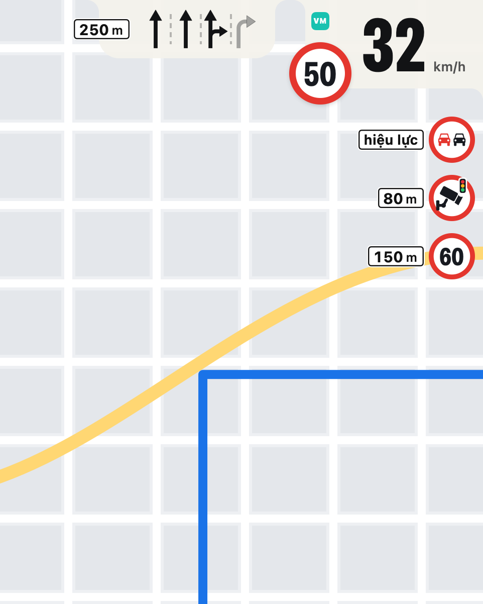
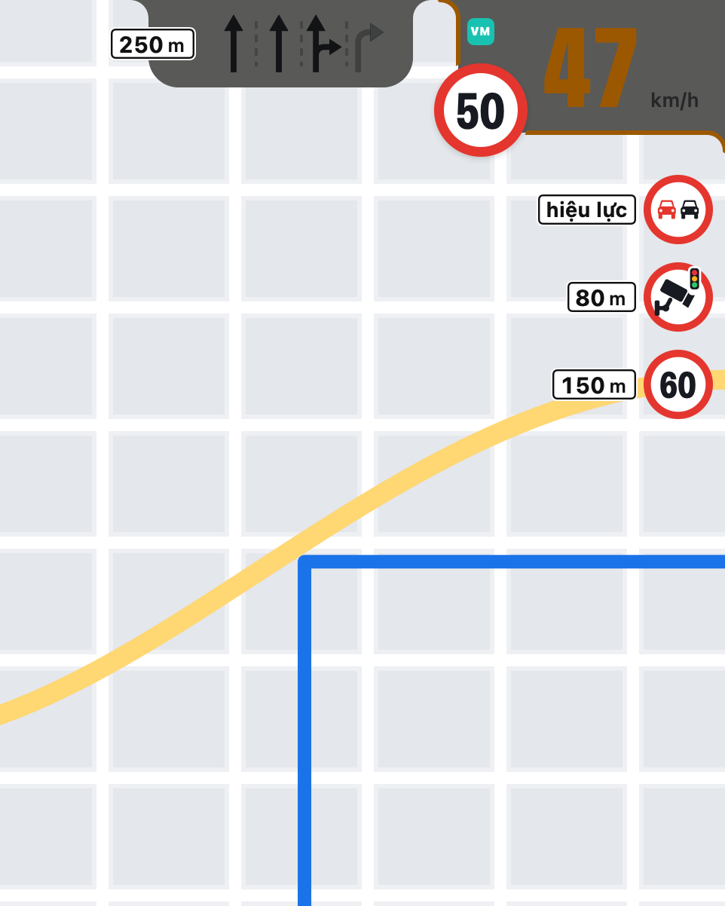
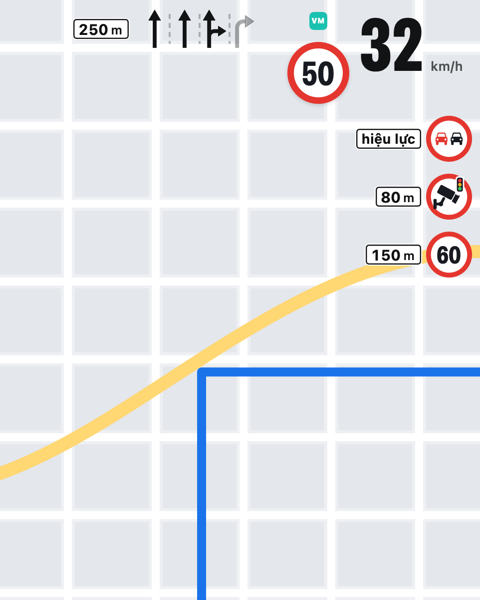
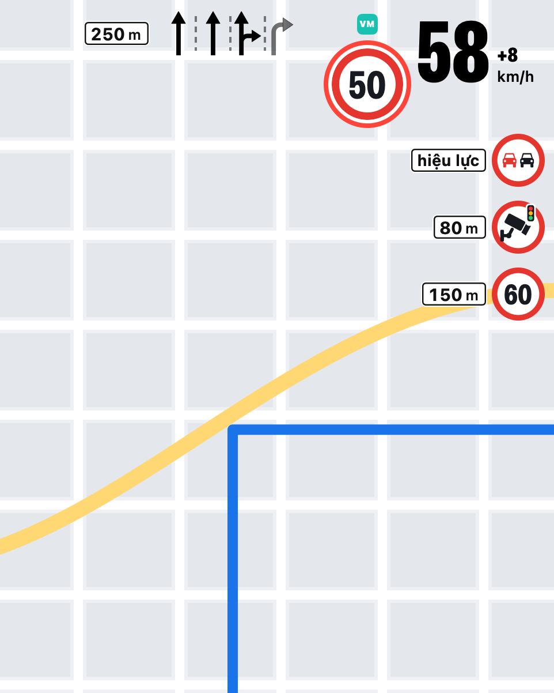
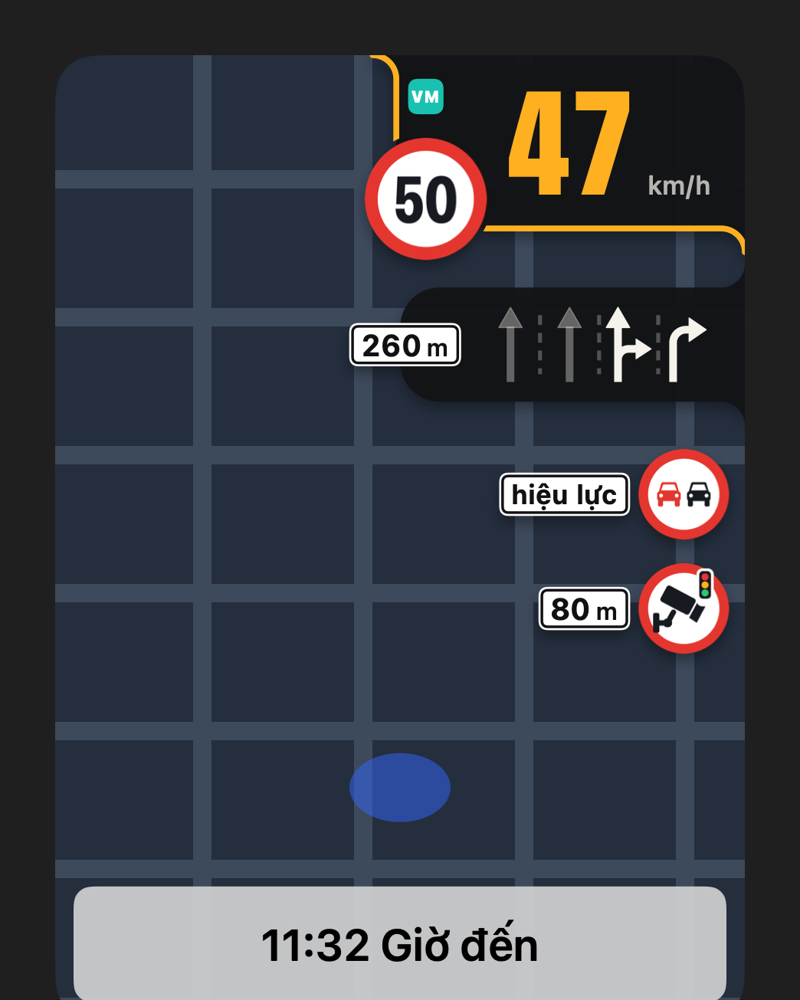

Tên biển hoặc một con số tốc độ; Lề vẽ biển tương ứng bên dưới.

Cấm vượt
Khi xe đã vào đoạn có biển, Lề ghi “hiệu lực” thay cho khoảng cách.
Lề tự vẽ 32 biển theo QCVN 41 và biển giới hạn với bất kỳ con số nào, cùng mũi tên làn và biểu tượng cảnh báo Waze. Gói cài không chứa hình của ứng dụng nào khác.
Bubble nổi trên mọi màn hình CarPlay.
Kéo tới bốn góc; các mảnh tự lật theo mép, và Lề nhớ chỗ bạn đặt.
Một thẻ riêng ngay trong Google Maps.
Trên bản đồ toàn màn hình, trong ô Dashboard của CarPlay và cả trên iPhone.
Vượt tốc độ là thấy ngay.
Số chuyển đỏ kèm “+25”; gần chạm giới hạn thì vàng; mép màn hình nhấp nháy nếu bạn bật.
Ứng dụng nguồn tự được đánh thức.
Lề giữ VietMap Live, GOFA hoặc Waze chạy nền khi bubble hay thẻ đang hiện.
Bốn bố cục, năm chất liệu
-
30–62 km/hgiới hạn 50lànbiển
Góc
-

tốc độgiới hạnbiển gần nhất
Gọn
-

tốc độgiới hạnlànbiển
Lề đứng
-

tốc độgiới hạnlànbiển
Lề ngang
-

32 km/hgiới hạn 50bình thường
Sơn
-

47 km/hgiới hạn 50sắp chạm
Kính
-

32 km/hgiới hạn 50bình thường
Sương
-

58 km/hgiới hạn 50vượt +8
Trần
Bốn ô đầu dùng chất liệu thứ năm, Nhựa. Kéo bubble sang góc khác trên CarPlay, các mảnh tự lật để bám hai mép của góc đó.
Ba nguồn,
một cách hiển thị.

| Nguồn | VietMap Live | tốc độ, giới hạn, biển, làn |
|---|---|---|
| Nguồn | GOFA | tốc độ, giới hạn, biển, làn |
| Nguồn | Waze | tốc độ, giới hạn, cảnh báo |
| Cần | iOS | 15 đến 26, rootless |
| Cần | CarPlay | có dây hoặc không dây |
| Cần | Google Maps | chỉ cho thẻ |
| Cần | Gói nền | mobilesubstrate, PreferenceLoader |
| Gói | dev.bechou.le | 0.2.0 · 1,8 MB |
| Gói | Xung đột | GMapHUD |
| Gói | Tải thẳng | tệp .deb |
-
Trước tiên, thêm nguồn.
Trong Sileo hoặc Zebra, thêm https://repo.bechou.dev/.
-
Rồi cài Lề, respring.
Sileo cài kèm mobilesubstrate và PreferenceLoader nếu máy chưa có.
-
Sau đó chọn nguồn.
Cài đặt › Lề: VietMap Live, GOFA hoặc Waze, rồi bố cục và chất liệu của bubble.
-
Cuối cùng, cắm CarPlay.
Mở ứng dụng nguồn một lần; từ đó Lề tự đánh thức nó mỗi chuyến đi.
Hỏi đáp
- Có phải để ứng dụng nguồn trên màn hình?
- Không. Khi bubble hoặc thẻ đang hiện, Lề giữ ứng dụng nguồn chạy nền (công tắc đánh thức trong Cài đặt › Lề). VietMap Live có thể nằm trên màn hình CarPlay cùng lúc.
- Lề có thay được đồng hồ của xe?
- Không. Số liệu có thể thiếu, trễ hoặc sai. Biển báo thật, đồng hồ xe và luật giao thông luôn đúng hơn. Chỉ chỉnh Lề khi xe đã đỗ.
- Vì sao Waze không có làn đường?
- Waze không đưa ra bảng làn. VietMap Live và GOFA có; với Waze, Lề hiện tốc độ, giới hạn và các cảnh báo như camera, tai nạn, công an.
- Dùng chung với GMapHUD được không?
- Không. Hai tweak dùng những lớp cùng tên trong Google Maps, nên gói Lề khai báo xung đột với GMapHUD.
- Lề có gửi dữ liệu đi đâu?
- Không. Số liệu đi từ ứng dụng nguồn tới CarPlay ngay trên iPhone, qua một tiến trình chuyển tiếp của Lề. Không có máy chủ nào.
- Số liệu cũ có còn hiện?
- Mỗi số liệu chỉ có hiệu lực 5 giây kể từ lúc đo. Hết hạn mà không có tin mới thì Lề ẩn nó, trừ khi nguồn vẫn đang báo về đoạn đường ấy hoặc xe đang đứng yên.